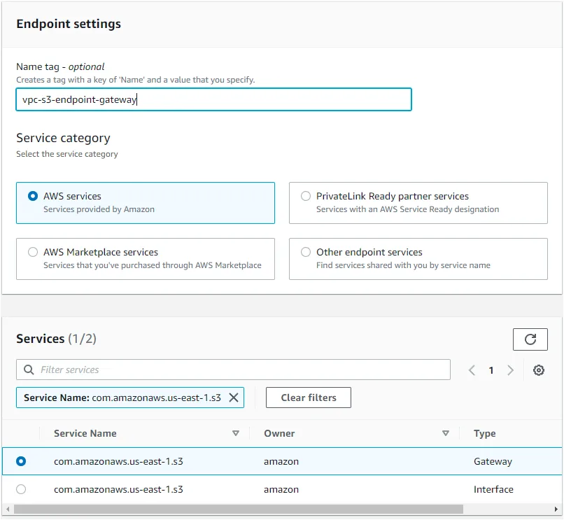
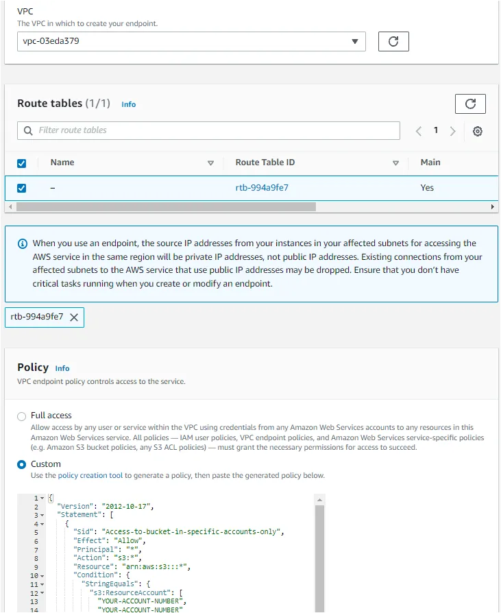
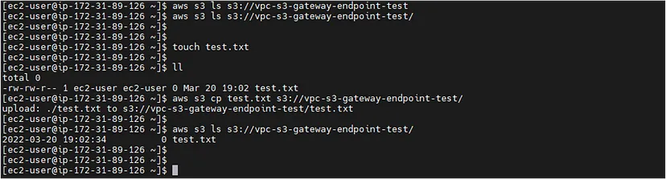
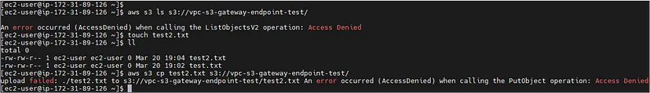

VPC S3 Endpoint with a Custom Policy
Today, we will explore the basic concepts of the VPC endpoint for S3, the different types and differences between them, and most importantly, how to configure an S3 endpoint policy to limit which buckets your services can communicate with.
A VPC endpoint comes in handy because we can use them to communicate with some supported AWS services without requiring an internet gateway. Not only that, but endpoints are horizontally scaled, redundant, and highly available VPC components.[1]
What types do we have?
- Gateway endpoint:
- It is a route entry in your route table to access Amazon S3 from your VPC over the AWS network.
- Interface endpoint:
- This type uses a private IP address from your VPC to route the traffic to the Amazon S3 service.
What are the differences between them?
VPC endpoint policies:
A VPC endpoint policy is an IAM resource policy that you attach to an endpoint when you create or modify the endpoint.[2]
IMPORTANT:
- If you do NOT attach a policy, AWS will attach a Full Access default policy for you;
- VPC endpoint policies do NOT override or replace Users/Resources policies;
- You CANNOT attach more than ONE policy to an endpoint;
- Your policy MUST contain a Principal element;
- Endpoint policy CANNOT exceed 20,480 characters (including white space);
Hands-on time!
For our testing scenario, we will use a VPC endpoint for S3 gateway type, but you can choose which type suits you better for your case.In addition, here is the link for a simple sample policy that I used in my testing environment.
CAREFUL.: DO NOT test an endpoint policy directly in a production environment, since you might have some unmapped interaction between your services and S3 buckets that could be impacted.
For simplicity and better visualization, the process below demonstrates how to deploy the VPC endpoint resource via AWS Console:

After successfully creating the endpoint and attaching our custom policy, we are ready to go and test if the policy restrictions will work as expected.
Let’s consider the first policy statement, sid Access-to-bucket-in-specific-accounts-only which allows any resource through the VPC endpoint to communicate with S3 buckets that are under s3:ResourceAccount.
In the first screenshot below, we were able to list objects of the vpc-s3-gateway-endpoint-test bucket and also to copy the test.txt file to it, because we have the account in which the bucket resides in our endpoint policy. On the contrary, when removing the account that has our bucket from our endpoint policy we got some permission errors along with access denied.

Conclusion:
Using a VPC endpoint for S3 makes us inherit some good benefits just out of the box as mentioned early. On top of that, we can attach a custom endpoint policy that brings some really nice access control through the endpoint.
Sources:
- https://docs.aws.amazon.com/vpc/latest/privatelink/vpc-endpoints.html
- https://docs.aws.amazon.com/vpc/latest/privatelink/vpc-endpoints-access.html
- https://docs.aws.amazon.com/AmazonS3/latest/userguide/privatelink-interface-endpoints.html
- https://aws.amazon.com/blogs/aws/aws-privatelink-for-amazon-s3-now-available